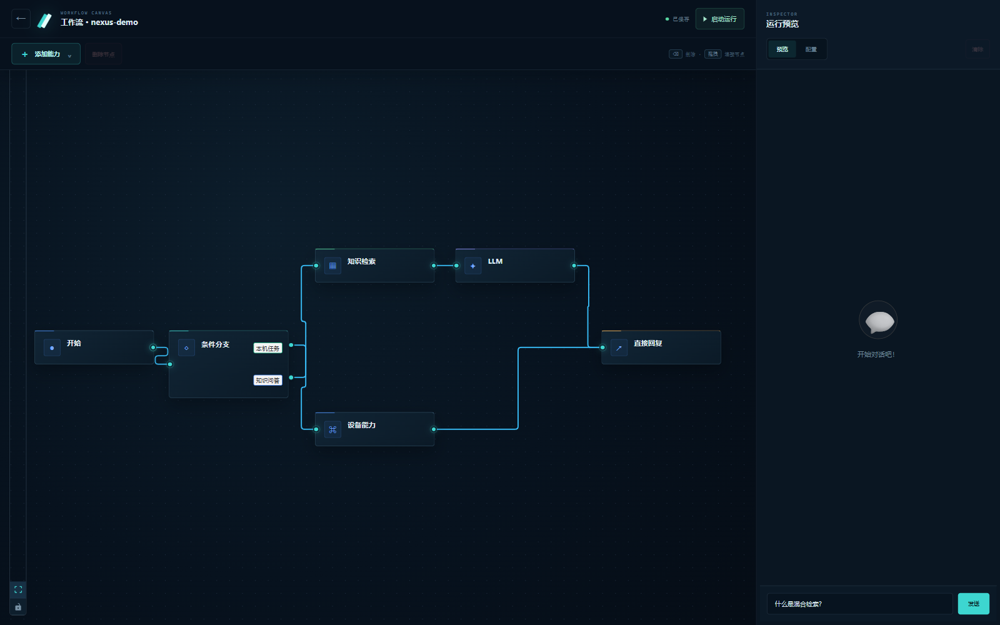
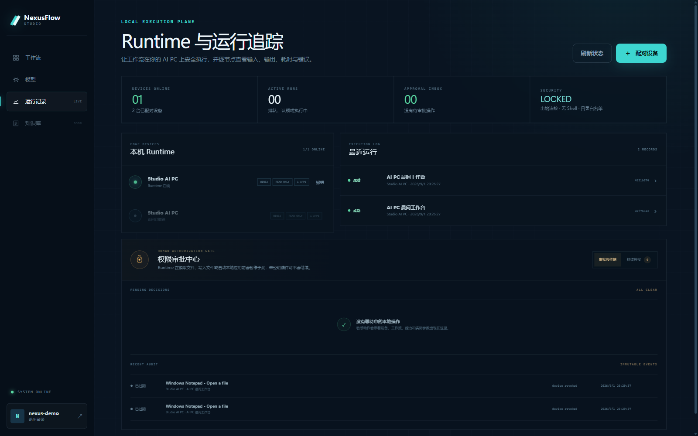
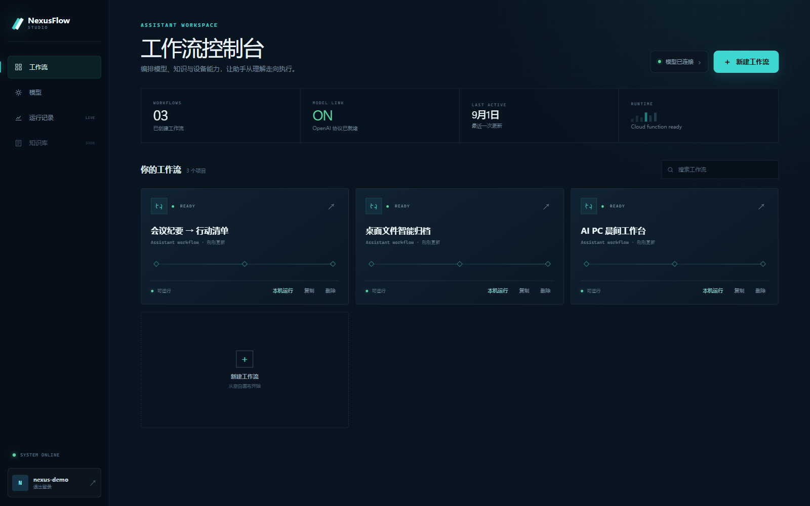

COMPOSE
像画流程图一样，编排 AI 与电脑
组合条件、知识库、模型和本地应用节点。每条连接，都是可读、可复用的执行逻辑。
ASSISTANT WORKFLOWS FOR AI PC
NexusFlow 连接 AI 模型、网页工作流与真实电脑。每一次本地操作，都先经过你的授权，再被完整记录。

01 / HOW IT WORKS
不是只停留在聊天框里。NexusFlow 把模型推理连接到本地 Runtime，同时保留人在关键动作上的最终决定权。
COMPOSE
组合条件、知识库、模型和本地应用节点。每条连接，都是可读、可复用的执行逻辑。
CONTROL
Runtime 只接受注册过的适配器能力。敏感动作可单次批准，也可持续授权，并随时撤销。
OBSERVE
设备、审批、调用参数与执行结果被串成完整时间线。成功、失败、撤销，都有迹可循。


拖拽节点，连接意图、推理与本机能力。
02 / LOCAL RUNTIME
无需把整台电脑暴露到公网。Runtime 从本机主动建立连接，只执行明确注册、明确授权的能力。
点击步骤，查看一次本地操作如何被理解、审批和追踪。
工作流已识别目标设备与所需能力，开始生成可审核的执行计划。
03 / TRUST BOUNDARY
批准“打开应用”不等于交出整台电脑。授权绑定设备与具体 capability，并可随时撤销。
本地 Runtime 主动连接服务端，不要求路由器开放入站端口。
兼容 OpenAI 协议，可使用自己的 endpoint、model 与 API key。
每次运行都保留结构化事件，方便解释、排查，也让自动化真正可被信任。